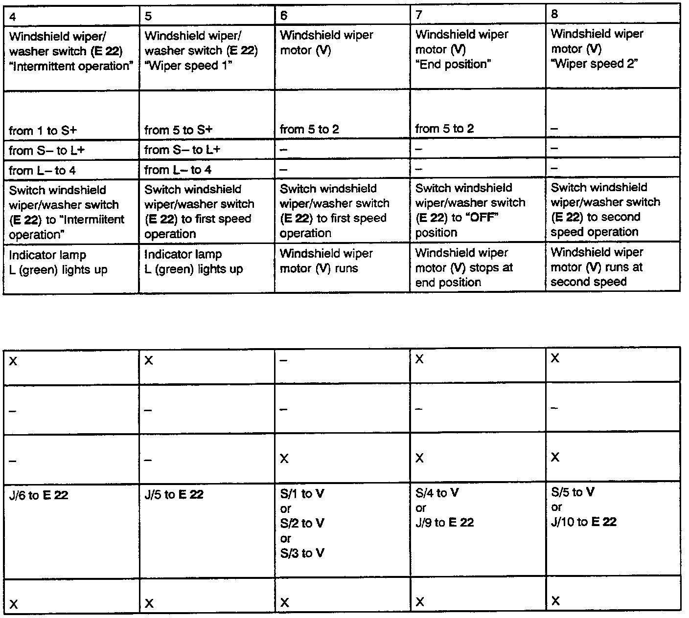

Checking Windshield Wiper/Washer System
Test Steps And Possible Causes:

Test Steps And Possible Causes Continue:

Use tester VAG 1486 when troubleshooting windshield wiper/washer system!
Test conditions:
- Fuse No.5 OK!
- windshield wipers in end position!
Troubleshooting preparations:
- Remove wiper/washer intermittent relay (J 31), stamped with production control number 19 or 99 (depending on equipment), from relay position 8.
- Remove rear window wiper/washer relay (J 30), stamped with production control number 72, from relay position 2.
- Insert test adaptor VAG 1486(5 into relay position 8.
- Connect VAG 1466 to test adaptor.
- Switch ignition ON
Test procedure information:
- Perform test steps according to table.
- If specified value/test result is obtained, continue troubleshooting with next test step (test result OK).
- If specified value/test result is not obtained, locate and eliminate malfunction using table.
- Use valid wiring diagram for checking wiring.
- Remove all test wires from sockets of VAG 1486 after each test step.
IF MALFUNCTION HAS NOT BEEN ELIMINATED AFTER PERFORMING TEST STEPS 1 THROUGH 8, REPLACE WIPER/WASHER INTERMITTENT RELAY (J31)!
After repairing malfunction, check windshield wiper washer system for proper operation.